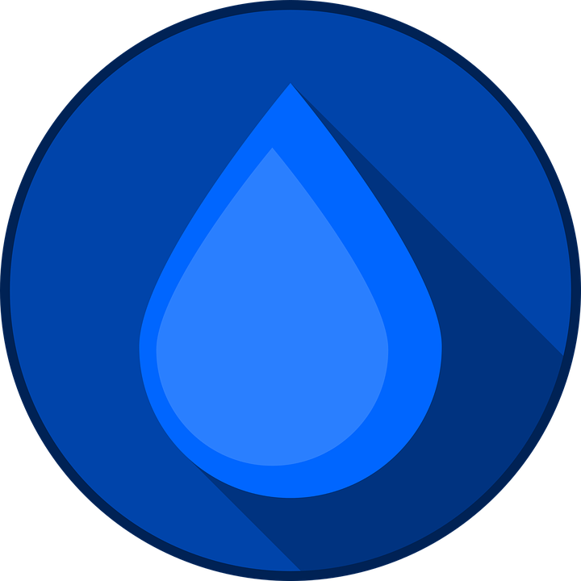
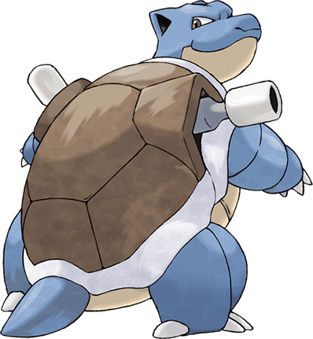
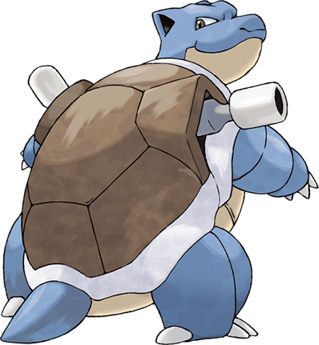

Estatísticas:
HP
Ataque
Defesa
Ataque Especial
Defesa Especial
Velocidade
Número na Pokédex: #007
Nome: Squirtle
Tipo:
aguaAltura: 0,6 metros
Peso: 8,5 quilogramas
Fraquezas:
 Grama
Grama Elétrico
Elétrico
Descrição:
Squirtle é um Pokémon do tipo Água conhecido por sua aparência de casco, sua habilidade de lançar poderosos jatos d'água e sua natureza amigável. Ele é frequentemente escolhido por treinadores iniciantes e evolui para Wartortle e Blastoise com o tempo. Squirtle é um nadador habilidoso e símbolo de amizade, disposto a proteger seus treinadores a todo custo.
Habilidades:
- Torrente: Aumenta o poder de movimentos do tipo Água quando a saúde está baixa.
- Wide Movepool: Pode aprender uma variedade de movimentos, tornando-se versátil em batalha.
- Habilidade de Natação: Não é uma habilidade do jogo, mas ele é conhecido por ser um nadador excepcional.
Evolução:
-
(16)➔
 (36)➔

(36)➔

Movimentos Conhecidos:
- Jato de Água (Water Gun)
- Investida (Tackle)
- Chicote de Calda (Tail Whip)
- Cauda de Ferro (Iron Tail)
- Redemoinho (Whirlpool)
- Hidro Bomba (Hydro Pump)
Curiosidades:
- Squirtle é um dos três Pokémon iniciais da região de Kanto, oferecidos aos treinadores pelo Professor Carvalho, ao lado de Bulbasaur e Charmander.
- Ele é famoso por sua casca em forma de concha que age como proteção contra ataques.
- Squirtle passa por uma evolução de três estágios: Squirtle, Wartortle e Blastoise.
- Na série de desenhos animados Pokémon, Squirtle liderou o "Squirtle Squad," um esquadrão de resgate.
- Seu vínculo com os treinadores é notável, e eles são conhecidos por sacrificar-se para proteger aqueles a quem estão ligados.
- Squirtle é um nadador excepcional, sendo ágil na água.